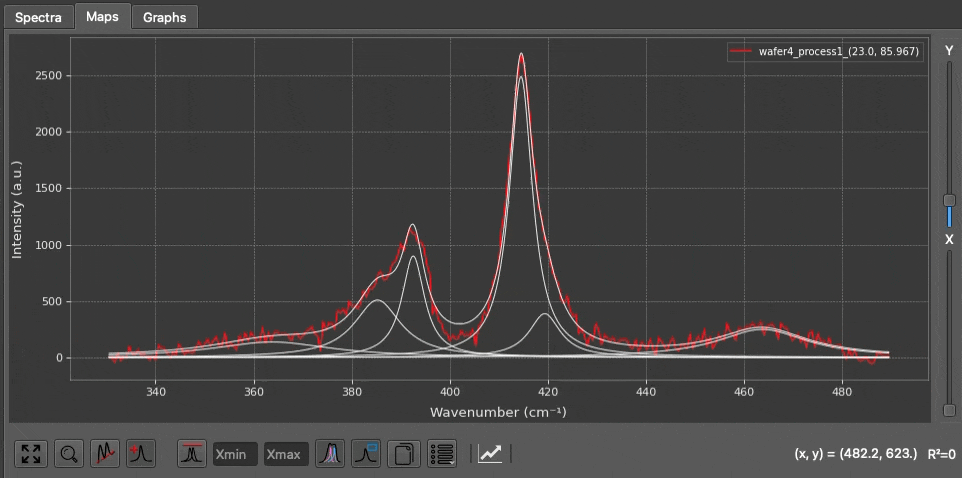
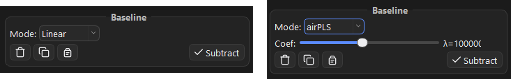
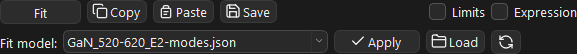
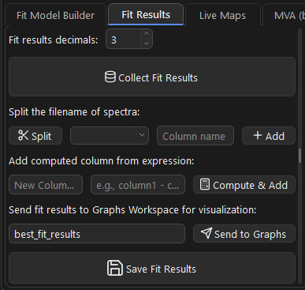

Workspace Spectra & Maps
Workspace: Spectra and Maps¶
The Maps and Spectra workspaces share a unified design and many core features. However, the Maps workspace includes specialized tools engineered for handling large hyperspectral datasets.

Interface overview of the
Spectra and Maps workspaces. Both interfaces are divided into three primary sections: Top-left (SpectraViewer), bottom-left (FitModelBuilder), and right (SpectraList / MapList).
1. MapList and MapViewer¶
MapList and MapViewer are widgets designed for the efficient navigation and management of your hyperspectral datasets. The MapList displays all loaded map files, including wafer maps and standard 2D maps.
The action buttons located beside the MapList allow you to: (1) view the selected map data, (2) delete the selected map from the workspace, or (3) export the selected map directly to an Excel file.
You can easily navigate between loaded 2D maps using the MapList, select multiple maps with Ctrl+Click or Shift+Click, and drag and drop one or more selected maps within the list to reorder them (updating Live Maps comparison order while keeping your active Primary map unchanged). The Primary selected map is rendered in the MapViewer. When opening or selecting a map, the first spectrum in the map is automatically selected and highlighted on the heatmap plot, immediately rendering its curve in SpectraViewer and synchronizing the baseline, peak table, and metadata. By default, the MapViewer displays a heatmap of signal "Intensity" or "Area". If the map has been fitted, you can select and visualize the heatmap of any fitted parameter.

- Dual sliders allow you to quickly adjust the spectral range and the data range of the heatmap plot.
- Navigation toolbar controls (Home / Rescale, Pan / Drag, and Zoom) let you interactively navigate, pan, and zoom into map regions using unified SPECTROview vector buttons.
- You can open several
MapViewerinstances simultaneously to compare different fitted parameters. - The options (
…) menu includes a Color scale selector to switch the heatmap between Linear and Log normalization. Log is useful when values span several orders of magnitude; it automatically falls back to linear when the data range is not strictly positive.

Mask Feature: Isolate specific regions of the heatmap by defining custom, parameter-based numerical filters.


Example of the mask feature for 2D maps: An MoS2 flake is isolated by applying a mask (intensity of peak A1g > 40 a.u.) to filter out the surrounding substrate.
2. SpectraList¶
The SpectraList displays all loaded discrete spectra (in the Spectra workspace) or all spectra for the currently selected map (in the Maps workspace) (see fig below).
You can select one or multiple spectra simultaneously; the selected spectra are immediately visualized in the SpectraViewer. Dedicated buttons allow you to select all spectra, reinitialize spectra, save selected data to TXT, or send the currently selected spectra to the Spectra workspace for isolated analysis.

The
SpectraList alongside the progress bar in the Maps workspace.
Processing Status Indicators: A neat circular status indicator dot on the right side of each item indicates its current processing state at a glance (green for converged fit, red for unconverged fit, blue for baselined, gray for cropped, and transparent/no dot for unedited spectra).
The Progress Bar under the SpectraList displays real-time fitting progress (%), number of converged spectra, and elapsed time (s). A "Stop" button is provided to safely halt an ongoing fitting process.
2.1. Cross-Workspace Transfer¶
When sending selected spectra from the Maps workspace to the Spectra workspace, the system uses deep-copied payload dictionaries. This means that:
- The raw intensity and coordinate arrays are perfectly preserved.
- The
baseline_config(including anchor points and calculation modes) is transferred exactly as you configured it. - Your entire
fit_model(including all peak limits, expressions, and initial guesses) is retained. - The active spectral cropping bounds and baseline subtraction states are kept identical.
This ensures that transferred spectra retain their full interactive and analytical states in the new workspace tab without affecting the original map.
3. SpectraViewer¶
The SpectraViewer is the central plotting widget where all spectra selected via the SpectraList (along with their best-fit curves) are visualized.
3.1. SpectraViewer with Interactive Mouse Controls¶

- Show Peak Parameters: Hover your cursor over any fitted peak to display a tooltip containing its precise parameters.
- Add/Remove Peaks: With the "Peak" button enabled in the toolbar, left-click to drop a new peak guess, or right-click near an existing peak to remove it.
- Adjust Peak Initial Guesses: Click and drag the center or width of an initial peak guess to manually adjust it before fitting.
- Quick Rescale Y-axis: Use your mouse wheel to rapidly scale the Y-axis up or down.
3.2. Toolbar Buttons and View Options¶
| Button | Function |
|---|---|
 |
Rescale: Automatically rescales the plot axes to fit the current data. Shortcut: Ctrl + R. |
 |
Zoom: When toggled on, enables a click-and-drag box zoom feature using the left mouse button. |
Baseline: When toggled on, allows you to manually define baseline anchor points by clicking directly on the spectra. |
|
 |
Peaks: When toggled on, allows you to manually add initial peak guesses by clicking directly on the spectra. |
Normalization: Displays the selected spectra normalized to their maximum peak intensity. Enter values into the "min" and "max" fields to normalize based on a specific spectral range. Raw spectra (left) vs. normalized spectra (right) — highly useful for inspecting subtle peak shifts. |
|
 |
Show Bestfit: Toggles the display of the best-fit curve(s). |
 |
Legend: Toggles the display of the legend box (or colorbar when Show colorbar instead of legend is enabled). When displayed inside the canvas, the legend box is pinned to the top right corner (upper right) to prevent obstructing lower-intensity spectra (or can be positioned outside adjacent to the canvas via Move legend box outside in More Options). Double-click anywhere inside the legend to edit the palette, maximum number of displayed entries, and spectrum colors and labels in one dialog. Changes are applied with OK or discarded with Cancel. For responsiveness, Spectra and Maps workspace selections are edited in batches of up to 100 spectra; narrow the selection to edit spectra outside the current batch. |
 |
Plot Heatmap: Positioned on the right side of the toolbar directly to the left of More Options and Copy, toggles the 2D intensity heatmap visualization mode for multiple selected spectra. Displays continuous spectral intensity evolution with dedicated Y-axis selection, custom labeling, and resolution controls directly on the toolbar. |
 |
3D View: Positioned between Plot Heatmap and More Options on the right side of the toolbar, toggles the interactive 3D visualization mode for selected spectra. Left-click and drag to rotate viewing angles, middle-drag to pan, right-drag or scroll to zoom, and click Rescale (Ctrl + R) to reset the camera angle and axis limits. |
More Options: Positioned on the right side of the toolbar (preceding Copy), opens a compact 2-column configuration panel allowing you to adjust X/Y units, toggle log scales, change plot styles, choose discrete or gradient spectrum color palettes from visual color-strip previews, set the maximum number of legend items (15 by default), toggle Move legend box outside to place the legend box adjacent to the canvas instead of overlapping spectra, toggle Show colorbar instead of legend (dynamically revealing Colorbar parameter for spectrum Index or numerical filename tokens and Colorbar label when checked) to display a right-side colorbar for ordered spectrum series, toggle Raw/Residual visibility, enable grids, adjust line widths, and define precise figure dimensions. |
|
 |
Copy: Positioned at the far right of the toolbar, copies the plot to your clipboard as a high-quality image. Use Ctrl + Click (or Cmd + Click on macOS) to copy the raw numerical plot data to your clipboard instead. |
3.3. Batch Legend Editor¶
Show the legend with the Legend toolbar button, then double-click anywhere inside the legend box to open the batch editor. This replaces the older workflow that required opening a separate dialog for every label or color.
The top of the dialog contains two plot-wide controls:
- Color palette: Select a palette from its visual color-strip preview. Discrete choices include the 20-color
DEFAULT_COLORS,tab20,tab20b,tab20c,Dark2,Paired, andAccent. Gradient choices includeviridis,plasma,jet,cividis, andmagma. - Max legend items: Set how many entries appear in the plot legend. The default is 15. This setting does not remove spectra from the plot.
The spectrum table provides one row per editable spectrum:
- Spectrum identifies the original spectrum or filename.
- Color selects a swatch from the active palette. Automatic keeps the spectrum linked to its palette-assigned color; selecting a swatch creates a per-spectrum override. Use More colors… for a color outside the palette.
- Label changes the text shown in the legend. Clearing a custom label restores the spectrum filename.
Changing the palette updates every Automatic color preview while preserving manually selected colors. Select OK to apply all edits together, or Cancel to discard every change made in the dialog. Accepted labels and colors are written back to the underlying spectrum objects, so the spectra list, Spectra workspace, Maps workspace, and saved workspace data remain synchronized.
100-spectrum editing batches
To keep the interface responsive with large selections, the dialog creates editors for at most the first 100 plotted spectra in both the Spectra and Maps workspaces. When the selection is larger, the dialog reports “showing 100 of N”. Spectra outside the displayed batch are not modified. Narrow the current selection to edit another group.
3.4. Heatmap Visualization Mode¶
The Heatmap Plot tool transforms multiple plotted spectra into a continuous 2D intensity map. This mode is particularly powerful for analyzing series data, such as in-situ temperature profiles, time-resolved kinetics, spatial line-scans, or composition gradients.


The
SpectraViewer in Heatmap visualization mode, displaying a continuous 2D intensity map across an in-situ temperature series.
Key Controls and Parameters¶
When Heatmap mode is activated, specialized configuration controls appear directly on the main toolbar, while incompatible 1D tools (such as peak markers, baseline anchors, cosmic-ray eraser, and normalization entries) are automatically hidden:
- Heatmap Toggle (): Enables or disables 2D heatmap rendering. Unchecking this button instantly restores standard 1D spectrum curves and returns all standard toolbar tools.
- Y-Axis Parameter Dropdown:
Index: Stacks spectra uniformly along the vertical axis according to selection order (0, 1, 2, ...).- Filename Tokens: Automatically extracts numerical parameters embedded in filenames separated by underscores (for instance,
sample_25°C.txt,sample_100°C.txt,sample_200°C.txtautomatically populate tokens such as25°C, extracting the corresponding numerical values25, 100, 200for physical Y coordinates). - Custom Y-Axis Label: Text field to override the automatic vertical axis title (e.g.,
Temperature (°C),Time (min), orPosition (µm)). - Y-Axis Interpolation Points (
Pts:): Specifies the number of interpolated vertical slices (default300pts) using smooth interpolation. Setting this value to0disables interpolation, displaying raw discrete rows. - Intensity Colormap: Respects the active color palette chosen under More Options (e.g.
jet,viridis,plasma).
3.5. Interactive 3D Visualization Mode¶
The 3D View button (), located on the right side of the toolbar between Plot Heatmap and More Options, displays your selected spectra in an interactive 3D space (spectral axis on X, series index or filename parameter on Y, and intensity on Z):
- Interactive Camera Navigation:
- Rotate: Left-click and drag anywhere on the 3D plot to freely rotate elevation and azimuth angles.
- Pan / Zoom: Middle-click and drag to pan; right-click and drag (or use the mouse scroll wheel) to zoom along the intensity axis.
- Reset View: Click Rescale (
Ctrl + R) to restore the default camera angle and fit all data bounds. - Shared Series Axis Controls: Choose
Indexor any numeric parameter parsed from filenames (e.g.,25°C,100°C) from the toolbar dropdown and optionally set a custom Y-axis label. - Compatible Options: Works seamlessly with Normalization, Show Bestfit, Legend / Colorbar modes, Line / Dot styles, Raw overlay, Grid, Linear / Log Z-scale, Light / Dark plot themes, and Copy to clipboard. Switching between Standard, Plot Heatmap, and 3D View automatically restores the appropriate toolbar tools.
3.6. Interactive Spectral Range Selectors & Live Maps (Spectra & Maps Workspaces)¶
In both the Spectra and Maps workspaces, you can interactively bracket up to three spectral features in the SpectraViewer and inspect their variation in real time within the dedicated Live Maps tab:

- Spectra Workspace: Displays up to three color-coded (Red, Blue, Green) 1D parameter variation graphs across the currently selected spectra in the
SpectraList, allowing rapid review of how peak intensity, position, height, or area evolves across a series of selected spectra.

- Maps Workspace: Automatically adapts to the spatial dimensionality of the selected map:
- 2D maps: Displays up to three real-time 2D spatial heatmaps across the active hyperspectral grid.
- 1D maps (profiles / line scans): Automatically detects collinear measurement coordinates and displays the Red, Blue, and Green channels as 1D line plots along the spatial axis (
X (mm),Y (mm), orDistance (mm)), seamlessly switching between heatmaps and line plots when you select different maps.

Range Selector Controls (Spectra Viewer)¶
A vertical toolbar panel located on the right edge of the SpectraViewer provides three independent, color-coded toggle buttons:
- Red (
R) - Blue (
B) - Green (
G)
Each button activates a corresponding pair of draggable vertical markers (brackets and shaded interval) directly on the spectrum plot and automatically switches the bottom tab bar to the Live Maps tab:
- Interactive Dragging: Click and drag either vertical boundary line to adjust the minimum or maximum wavenumber. Click and drag the shaded middle area to shift the entire interval without altering its width.
- Multiple Simultaneous Ranges: Any combination of the three selectors can be activated at once. Each maintains its own color, interval, and visibility independently.
- Rescale Integrity: Range selector markers do not expand or pollute the spectrum autoscale boundaries, ensuring the Rescale button (
Ctrl+R) always zooms perfectly to the loaded spectral data. - Auto-Clamping: When cropping or loading new spectral data, range selectors automatically clamp and reposition within the visible spectrum domain.
- Real-Time Updating: Moving any selector or changing the selected spectra/maps immediately recalculates and updates the corresponding 1D variation graph (in the Spectra Workspace) or 2D spatial heatmap / 1D profile plot (in the Maps Workspace) whenever the Live Maps tab is open (with an adaptive 60–250 ms debounce to keep dragging smooth on large datasets). Unchecked spectra in the active map or spectrum list are automatically masked out so masked outliers never bias colorscales or profiles.
- Multi-Map Selection & Comparison (Maps Workspace): Use
Ctrl+ClickorShift+Clickin the Maps list to select multiple maps simultaneously while keeping your Primary Map active for preprocessing, fitting, and theMapViewer: - Comparing Multiple 1D Profiles: When the Primary map is a 1D line scan, all selected 1D profiles are overlaid together inside each channel subpanel with uniform line thickness (toggle the Legend button to identify individual curves on the canvas).
- Switching Between Selected 2D Maps: When the Primary map is a 2D map, a compact
◀ [2D Map Selector] ▶switcher appears in the Live Maps header so you can cycle through selected 2D heatmaps without losing your selection. - Batch Deletion: Pressing Delete while multiple maps are selected prompts for confirmation before removing all selected maps together.
Live Maps Tab Visualization & Subpanels¶
The Live Maps tab is located on the bottom tab bar between Fit Results and MVA (with the More tab positioned at the end of the tabs list).
- Subpanels Display: When one or more range selectors are active, their corresponding panels (Red, Blue, Green) are displayed side-by-side. If no selectors are currently active, a helpful placeholder message guides you to activate a selector button on the right edge of the
SpectraViewer. - Supported Spectral Parameters: For each subpanel, you can select which parameter is extracted and plotted from the dropdown:
| Parameter | Type | Description |
|---|---|---|
| Integrated intensity | Direct | Integral (\(\sum Y \cdot \Delta x\)) of intensity across the selected spectral interval. |
| Mean intensity | Direct | Average intensity within the selected interval. |
| Maximum intensity | Direct | Highest intensity value measured within the interval. |
| Peak position | Direct | Wavenumber corresponding to the maximum intensity within the interval. |
| Peak height | Direct | Maximum intensity minus local baseline at interval endpoints. |
| Peak position (fit) | Fit-based | Center wavenumber (\(x_0\)) of a fitted peak within the interval (requires prior fitting). |
| Peak height (fit) | Fit-based | Fitted amplitude (\(A\)) of the peak within the interval (requires prior fitting). |
| Peak area (fit) | Fit-based | Analytical integrated area of the fitted peak (requires prior fitting). |
| R/B ratio (Green channel only) | Derived | Pixel-by-pixel (2D map) or point-by-point (1D profile / spectra series) integrated intensity ratio \(I_{\mathrm{Red}} / I_{\mathrm{Blue}}\). Updates automatically when Red or Blue brackets are moved or resized; zero or near-zero Blue intensities are safely masked as NaN. While R/B ratio is selected, the Green bracket is automatically hidden on the spectrum plot so only the Red and Blue brackets driving the ratio are displayed (switching back to any other parameter immediately restores the Green bracket). |
Note: If a fit-based parameter is selected but fit results are not yet available, the panel gracefully displays a notification banner rather than misleading or corrupted values.
Interactive Spectrum Selection from RGB Live Maps (Maps Workspace)¶
When working with 2D maps or 1D profile maps in the Maps workspace (whenever the Pan and Zoom tools are unchecked), you can select spectra directly from any Red, Blue, or Green subpanel without leaving the Live Maps tab:
- Single Click: Selects the spectrum nearest the clicked coordinate and immediately displays it in
SpectraViewer. Ctrl+ Click: Adds another spectrum to the current selection (or toggles an already-selected site off).- Click & Drag: Draws a dashed selection box to select all spectra inside the region (
Ctrl+ drag adds the boxed spectra to your existing selection). - Synchronized Highlights & Multi-Map Switching: Selected sites are outlined in red across all active RGB subpanels and kept in sync with the main
MapViewerand floatingVMapViewerDialogwindows. If you switched to another 2D map via the◀ [2D Map] ▶header control, clicking a site on it automatically makes that map your Primary map and loads its spectra. Clicks inside an open legend box remain dedicated to dragging or double-click label editing.
Individual Subpanel Controls¶
Each subpanel provides dedicated controls:
- Rescale / Pan / Zoom: Independent navigation buttons in each subpanel header allow you to zoom into regions of interest, pan across the curve or heatmap, and reset back to the full plot range without affecting adjacent channels. Double-clicking on a legend still opens the legend editor rather than resetting zoom.
- 1D Curve Normalization (1D maps & 1D line plots): Toggle the normalization button beside the parameter dropdown (with optional
XminandXmaxbounds) in each RGB subpanel to visually normalize each displayed 1D curve independently to1.0at its global maximum or within[Xmin, Xmax]without modifying underlying data—ideal for comparing profile shapes across maps with different signal amplitudes. - Palette (2D heatmaps in Maps Workspace): Choose any standard colormap (e.g.,
viridis,plasma,inferno,jet,turbo,coolwarm,cividis,magma,Reds,Blues,Greens). In the Spectra Workspace, each 1D variation curve is automatically styled in its matching selector color (Red, Blue, or Green). - Copy: Copy the subpanel figure to the clipboard at the configured Copied figure size and Copied figure theme (independent of the current SPECTROview window size). Hold
Ctrl+ Click (orCmd+ Click on macOS) to copy the underlying numerical dataset of that plot as tab-separated columns (1Dvariation series, single/multi-1Dprofile tables, or2D(X, Y, Value)map points) to the clipboard instead. - Range / Status Badge: Displays the current interval range \([x_{min}, x_{max}]\) or fitting status.
Live Maps View Options & Legend Customization¶
Whenever one or more selectors are active, two quick controls appear in the top-right corner of the Live Maps tab:
- Show / Hide Legend (
btn_legend): Toggles interactive canvas legends across 1D subpanels. You can drag inside legends directly with the mouse, or double-click a canvas legend box to customize its labels and colors. - More View Options (
⋯): Opens a compact 2-column menu matchingSpectraViewerspacing (all choices are synchronized between Spectra and Maps workspaces and automatically saved for future startups): - Plot Theme: Switch Live Maps figures between Light Mode (white canvas, default) and Dark Mode independently of the global application UI theme.
- Axis & Color Scales: Toggle X-scale, Y-scale, and Color (Z) scale between Linear and Log (non-positive domains automatically fall back safely).
- Plot Style & Sizing: Switch 1D curves between Line (default), Line + Dots, and Dot, and tune Line width (default
1.5), Dot size (default1.5), and graph Text size (6–24 pt, scaling axis titles, labels, ticks, and colorbar labels). - Copied Figure Size & Theme: Set fixed clipboard figure dimensions in inches (Copied figure size, default
5.5×4.0) and choose Copied figure theme (Light Mode default or Dark Mode) so copied figures retain constant proportions and readable text sizes regardless of window resizing. - Legend Box Settings: Toggle legend visibility, change Legend location (
best, corners,outside right,outside top), Legend columns, Legend font size, or open Edit legend labels... to rename series labels and pick custom colors directly on the canvas legend box. - Display & Comparison Aids: Show or hide the Show figure label title above each RGB canvas (default Off), toggle Show grid (default Off), synchronize Y-limits across panels with Share Y-axis (1D), enable bilinear Heatmap smoothing, show/hide Colorbars, or Reset view options.
4. FitModelBuilder¶
The FitModelBuilder tab is where you configure your spectral fit models. It is divided into three main panels: Fitting, PeakTable, and FitModelControl, each explained in the following sections.
You can use global fitting parameters or adjust fitting parameters in the Settings Panel (see the "Settings" section for details).

The
FitModelBuilder tab featuring: (1) The Fitting panel (left), (2) The PeakTable panel (top-right), and (3) The FitModelControl panel (bottom-right).
4.1. Fitting Panel¶
The Fitting panel guides you through the process of building a robust model in four logical steps:
Step 1: X-axis Correction (Optional): Perform an empirical X-axis correction based on measurements from a known reference sample (e.g., a Silicon peak at exactly 520.7 cm⁻¹). Simply fit your reference data, input the theoretically correct position, and apply the shift to correct calibration offsets globally.
Step 2: Define the Fitting Range: Restrict the mathematical fitting process to a specific X-axis region of interest.
Step 3: Baseline Definition: SPECTROview offers two distinct modes for defining spectral baselines (Manual or Auto):

Baseline mode selection: Manual mode (left) vs. Auto mode (right).
- Manual Mode (
LinearorPolynomial): Define baseline anchor points by clicking directly in theSpectraViewer. Check Attached to automatically snap your clicked points to the nearest data curve. Check Correct noise to calculate the point's intensity as a local average of neighboring data, making the anchor placement robust against high noise. - Auto Mode: Let advanced algorithms automatically generate the baseline curve. Use the slider to fine-tune the algorithm's aggressiveness.
arPLS: Asymmetrically Reweighted PLS. A gold-standard algorithm for typical Raman and IR baselines.airPLS: A highly aggressive algorithm, excellent for removing strong, complex fluorescence backgrounds. Highly recommended and validated for Raman data.AsLS: A very stable algorithm, though it can sometimes struggle to distinguish between noise and broad peaks. Best suited for relatively clean spectra.ModPoly: Modified Polynomial. Extremely popular and effective for simple polynomial fluorescence backgrounds.
Step 4: Peak Definition:
- Add peaks directly inside the
SpectraViewerby left-clicking (ensure the Peak toggle button is active). You can interactively adjust their initial guesses by dragging them with the mouse. - Every peak added to the plot is immediately listed in the
PeakTable. - Supported peak profiles include:
Lorentzian,Gaussian,PseudoVoigt,LorentzianAsym,GaussianAsym,Fano,DecaySingleExp, andDecayBiExp.
4.2. Supported Peak Profiles¶
SPECTROview's VBF Engine provides heavily optimized implementations for the following mathematical peak profiles:
| Model | Parameters | Formula |
|---|---|---|
Gaussian |
ampli, fwhm, x0 |
a · exp(-4 ln(2) · (x-x0)2 / w2) |
Lorentzian |
ampli, fwhm, x0 |
a / [1 + 4(x-x0)2 / w2] |
PseudoVoigt |
ampli, fwhm, x0, alpha |
α · G + (1-α) · L |
GaussianAsym |
ampli, fwhm_l, fwhm_r, x0 |
Piecewise Gaussian with left/right FWHM |
LorentzianAsym |
ampli, fwhm_l, fwhm_r, x0 |
Piecewise Lorentzian with left/right FWHM |
Fano |
ampli, fwhm, x0, q |
a · (q + ε)2 / (1 + ε2), ε = 2(x-x0)/w |
DecaySingleExp |
A, tau, B |
A · e-t/τ + B |
DecayBiExp |
A1, tau1, A2, tau2, B |
A1 · e-t/τ1 + A2 · e-t/τ2 + B |
4.3. PeakTable Panel¶
The PeakTable displays all mathematical parameters for the peaks you have defined. When you drag a peak in the viewer, these properties update dynamically.
Dynamic Peak Indexing: Every peak is automatically indexed with a suffix (e.g., _1, _2) indicating its order of creation. When you add, delete, or reorder peaks, SPECTROview automatically re-indexes them to maintain consecutive numbering (e.g., if you delete peak 2, peak 3 becomes the new peak 2). This ensures your expressions and fit results remain organized.

The
PeakTable panel displaying peak parameters and constraints.
Add Constraints for Fit Model:
Fix: Check the "fix" box to freeze the parameter value, preventing the optimizer from changing it during the fit.
Limits: Enter minimum and maximum boundary values to restrict how far the optimizer can move the parameter.

Example 1: Activate the "Limits" option under the peak table and set "min" and "max" values for each fit parameter.
Expression: Define complex mathematical relationships between parameters. SPECTROview's VBF Engine robustly evaluates these expressions mathematically before mapping them to the optimizer. If peaks are re-indexed due to deletions, their references in your mathematical expressions are automatically updated to prevent broken models.

Example 2: Using an expression to constrain that (1) the peak position of peak E (P2) is 17 smaller than peak A (P1) or (2) the amplitude of peak E (P2) is exactly half the amplitude of A (P1).
4.4. FitModelControl Panel¶
Once your model is fully defined, click the Fit button to execute the optimization.

The
FitModelControl panel.
Copy / Paste Fit Models: A fully configured fit model can be copied from one spectrum and pasted onto another, making it easy to replicate complex setups across isolated files.
- When you Paste a model, the engine always fetches the current Noise Threshold setting from your active Settings Panel. This means you can copy a model, adjust your noise threshold, and paste it to apply the model with the updated noise settings.
Saving / Loading Fit Models: If you intend to use a model frequently, you can save it as a template. Stored models can be easily accessed and applied to new datasets using the dropdown menu.
- Select from Dropdown: Pick any pre-existing model from the
Fit model:combobox. - Load via Button: Click the Load button to browse for and load any
.jsonfit model template from your filesystem. - Drag & Drop: You can drag and drop a
.jsonfit model file directly onto theFit Model Builderpanel or anywhere on the Spectra or Maps workspace. The file is instantly added to the model list, selected in the dropdown, and ready to be applied. - Apply Model: Click Apply to assign the loaded model to the currently selected spectrum (or hold Ctrl while clicking Apply to assign it to all spectra).
- When you Save a model to a
.jsonfile, the current Noise Threshold is permanently baked into that file. Later, when you Apply (Load) that model, the fit engine strictly uses the exact noise threshold saved in the file, ignoring whatever is currently set in your Settings Panel.
- When you Save a model to a
5. Collect and Save Fit Results¶
Once fitting is complete across your spectra or maps, you need to aggregate the best-fit results:
- Navigate to the Fit Results tab.
- Click the Collect button. SPECTROview will instantly aggregate all best-fit parameters into a unified data table. Each spectrum's fit quality (R2, the coefficient of determination) is included as a column, so you can filter or plot it (e.g. an R² heatmap in the
Mapsworkspace) just like any fitted parameter. You can click any column header to select the entire column, or drag across headers to select multiple columns for quick clipboard copying.
Adjusting decimal precision: the number of decimal places shown for the numeric results (x0, ampli, fwhm, area, R2, …) is controlled by the Fit results decimals spinbox at the top of the Fit Results tab, just above the Collect button (default 3). Change it, then click Collect again to rebuild the table at the new precision. It also applies to computed columns (see below). The X/Y coordinate columns always keep full precision.

The Collect Fit Results interface and aggregated data table.
5.1. Splitting Filename Features¶
This tool allows you to automatically extract metadata embedded in your filenames. For example, if your files are named Sample1_ProcessA_Temp25, the tool can split the filename by underscores (_) and assign the extracted values into distinct new columns in your dataset (see the video above).
5.2. Compute and Add New Columns¶
You can easily create new columns derived from mathematical combinations of existing fitted parameters (e.g., calculating a peak shift via x0_p1 - x0_p2).
Supported mathematical operations include: +, -, *, /, **, %, and (). The computed column is rounded to the same Fit results decimals precision set at the top of the tab.
Important Note: If your column names contain spaces or special characters, you must enclose them in backticks. Example:
`x0_LO(M)`
5.3. Save and Visualize¶
Once your data table is finalized, you can:
- Save it with a descriptive name, then send it directly to the
Graphsworkspace for immediate plotting.

- Export it to an Excel/CSV spreadsheet for external use.

6. More Tab¶
The More tab provides access to auxiliary tools and metadata, divided into three sections:

- Left: Displays comprehensive metadata extracted directly from loaded
.wdf,.spc,.l6s,.l6m,.ngs, or.ngcfiles, showing the exact instrument settings used during acquisition. - Middle: Displays detailed properties and statistical information about the currently selected spectrum.
- Right: Provides access to additional pre-processing utilities, such as global intensity normalization algorithms and cosmic ray artifact detection.